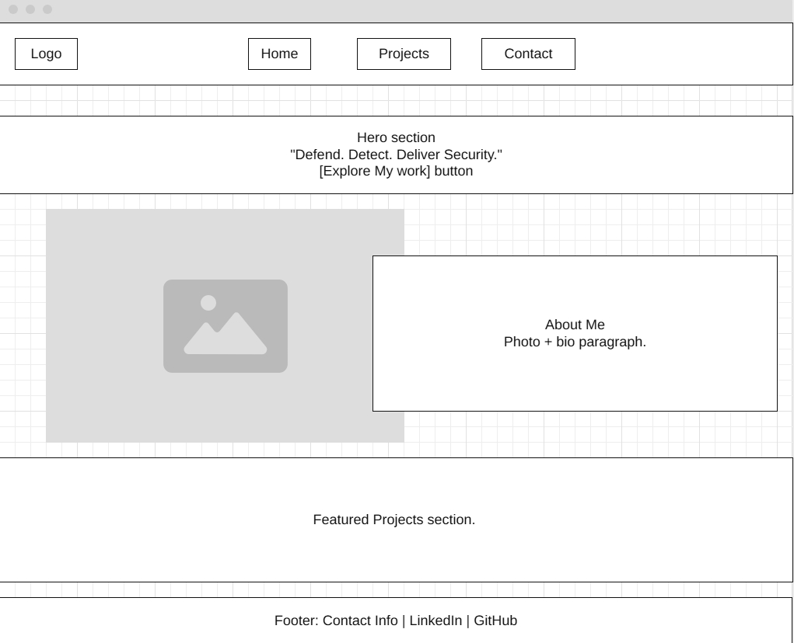
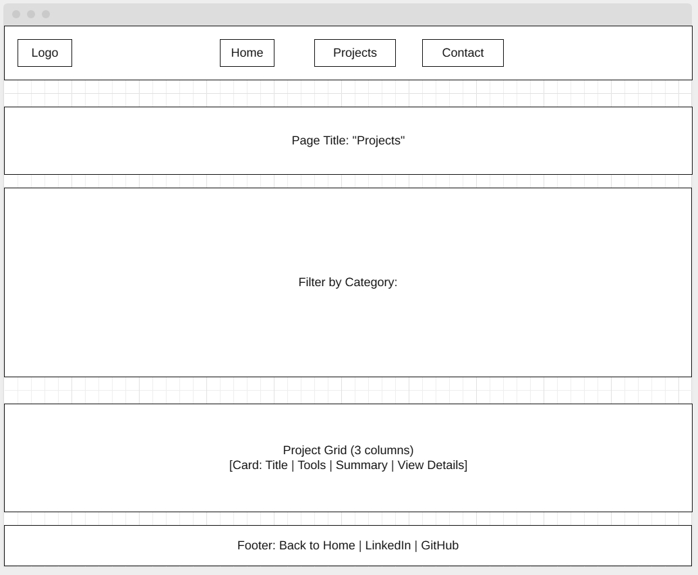

Overview
Purpose
The purpose of my website is to showcase my evolving cybersecurity skills, including threat analysis, system hardening, and ethical hacking techniques.
Audience
This portfolio is designed for potential employers, and peers who are interested in digital security and want to explore my hands-on work in protecting system and data integrity.
Dynamic elements
Some of the dynamics elements that I will use will be the drak mode toggle to allow visitors switch between light and dark mode. I will use event listeners and update CSS variables dynamically to reflect the change. I will use other elements that will help me show mastery over DOM interactions, conditional logic, arrays, and objects.
Branding
Website Logo
Style Guide
Color Palette
Palette URL: https://coolors.co/001f3f-45a29e-66fcf1-c5c6c7-a42212-0b0c10| Primary | Secondary | Accent 1 | Accent 2 | ||
|---|---|---|---|---|---|
| #001f3f | #45a29e | #66fcf1 | #001f3f | #a42212 | #0b0c10 |
Typography
Heading Font: Times New Roman
Paragraph Font: Times New Roman
Normal paragraph example
Hi, I’m Jonathan Binene—a cybersecurity learner passionate about threat detection, ethical hacking, and protecting digital environments. Explore hands-on projects and simulations that blend theory with real-world security practices.
Colored paragraph example
Whether I’m analyzing system vulnerabilities or building security minded interfaces, I believe in solving problems with integrity and precision. This site documents my personal cybersecurity journey, covering the tools, techniques, and lessons I gain along the way.
Navigation
Content
Home page
[content, images, data for the home page]
[Page 2]
[content, images, data for the subpage]
Wireframes
Create two wireframes for your site. One for each page and list them here
Home
[Any additional details about home that the wireframe does not make clear]
[Page 2]
[Any additional details about page 2 that the wireframe does not make clear]
